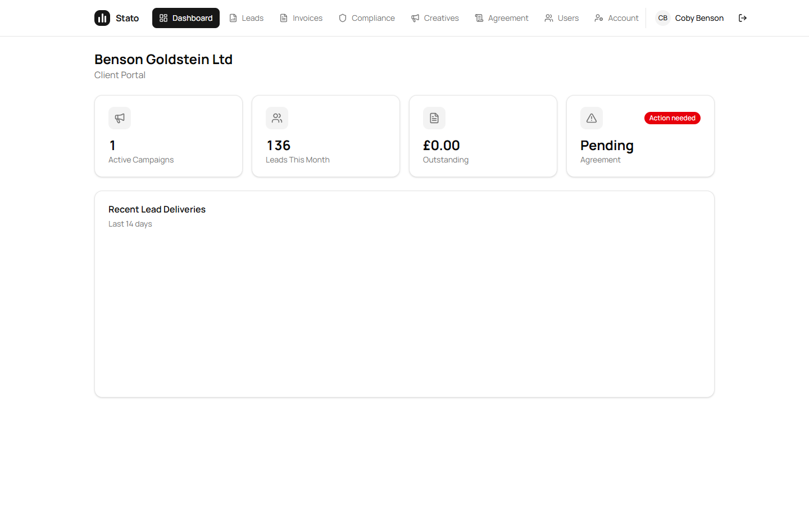
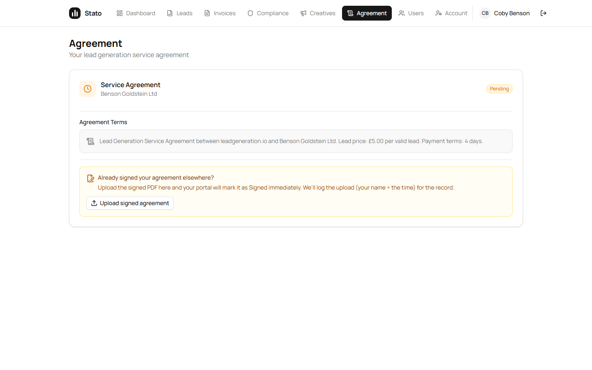
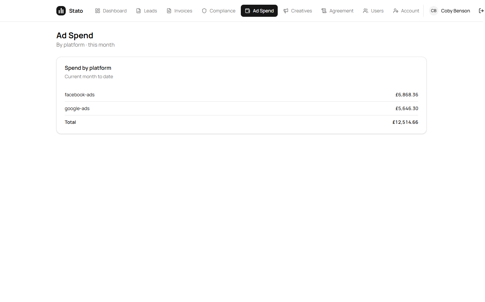

All UI + data from the 4:30 PM meeting is shipped to production. Multi-user access, per-user tab permissions, agreement self-upload, compliance → creatives approval flow, manual override for pending agreement — all live in the client portal under Kobe (client_admin self-serve).
Ad Spend is now its own dedicated nav tab at /portal/ad-spend (Hari's PR #29) — visible to managed clients only (Benson is managed; PPL clients hidden, confirmed live with UKESN's Jamie).
Real data is now flowing after Hari's BE PR #22 rewired attribution through traffic_sources instead of relying on ad_spend.client_id. Verified live on Kobe's portal just now: Facebook £6,868.36 + Google £5,646.30 = £12,514.66 total for May (MTD).
Action needed from you: log into the Benson portal as Kobe, walk the testing steps below, and reply in the group.
| Feature | Where in client portal | Status |
|---|---|---|
| Multi-user access (client_admin self-serve, not Sam) | /portal/users · client_admin sees "Add user" button · creates portal logins for own staff |
Live |
| Remove portal user | Trash icon on each row · confirm dialog · row vanishes instantly (optimistic UX) | Live |
| Per-user tab permissions (OCT-61 — Sam's "select what they can see") | Add-user dialog: tab toggles · Permissions button on each row to edit later | Live |
| Manual override "Pending agreement" | /portal/agreement · amber "Already signed elsewhere?" upload box (client_admin only) · auto-flips Pending → Signed |
Live |
| Compliance → Creatives flow | Compliance shows pending only · Creatives shows approved as dated folders ("Wednesday, 27 May 2026 · 2 assets") | Live |
| Routing fix for client_admin (was landing on blank page) | Login now sends client_admin to /portal, not / · no more 403 cascade |
Live |
| Removed staff SOS button from client portal | SOS pings Sam from any signed-in user — it shouldn't be visible to clients | Live |
| Header polish (initials avatar + divider before username) | Top-right of every portal page · "CB Coby Benson" no longer collides with the active nav tab | Live |
Benson reclassified ppl → managed |
Unlocks the Ad Spend tab in Kobe's nav · "Managed" badge now next to "Benson Goldstein Ltd" | Live |
| Ad Spend dedicated tab (Hari PR #29) | New nav item /portal/ad-spend · per-platform spend + per-currency totals · managed clients only · empty / "not on your plan" states wired |
Live |
| Ad Spend real data live for Benson (Hari BE PR #22) | Attribution rewired via traffic_sources instead of ad_spend.client_id. Kobe's tab now shows Facebook £6,868.36 + Google £5,646.30 = £12,514.66 for May MTD. |
Live |
Where: Own nav tab between Compliance and Creatives — direct link /portal/ad-spend. Managed clients only (PPL clients never see the tab; confirmed live on UKESN). Dashboard card removed in PR #29 so there's only one place to look.
What broke / how it got fixed: The first cut filtered ad_spend by client_id — every row had NULL there (the ingestion pipeline doesn't tag client at write time). Hari's BE PR #22 rewired the lookup to go through traffic_sources.account_id → client_id instead, which is the same path the agency-side getPnlSummary already uses for P&L. No data migration was needed — just the query path change.
Live numbers right now (verified just before this update): Benson MTD = £12,514.66 total — Facebook £6,868.36 + Google £5,646.30. Numbers update automatically as Catchr ingestion runs daily.

/portal (not blank), Users tab visible (client_admin only), no SOS button, header avatar + divider.

/portal/agreement shows the amber "Already signed your agreement elsewhere?" box. Kobe uploads the signed PDF themselves; Pending flips to Signed automatically.

Use an incognito window so the deployed bundle isn't masked by an old disk cache. Sign in as Kobe (coby@bensongoldstein.com).
| # | Step | What you should see |
|---|---|---|
| 1 | Open sato-frontend.vercel.app/login in incognito and sign in as Kobe |
Lands on /portal — title "Benson Goldstein Ltd" with a "Managed" badge. Nav has 9 items including Ad Spend and Users. |
| 2 | Click Ad Spend tab | Lands on /portal/ad-spend. Heading "Ad Spend", subtitle "By platform · this month". For now: empty state "No ad spend this month" (data is Hari's piece). No crash. |
| 3 | Click Compliance → review the pending PCP creative → click Approve | Toast confirms. Switch to Creatives tab — the approved asset appears in a dated folder e.g. "Wednesday, 27 May 2026 · 3 assets". |
| 4 | Click Agreement tab | Amber box "Already signed your agreement elsewhere?" is visible with an Upload signed agreement button. (Optional: upload any PDF — agreement flips to Signed, dashboard banner clears.) |
| 5 | Click Users tab → Add user | Dialog opens with Name / Email / Initial password / Make admin / "Tabs they can see" toggle grid (5 toggles). Turn a couple OFF, leave Make admin OFF, press Add user. Toast: "Portal user added". |
| 6 | On the same row, click the Trash icon → confirm | Row disappears immediately, toast "Portal user removed — <email>". |
| 7 | Add a second user (any name/email), then click "Permissions" on their row | Edit dialog opens pre-filled with their current tabs. Toggle a couple, Save → toast "Permissions updated". |
| 8 | Sign out → sign back in as that limited user | Nav shows fewer tabs (only the ones you allowed) plus Dashboard + Account. Direct URL to a hidden tab still loads but the link isn't in the nav. |
| 9 | Sign back in as Kobe | Top-right shows CB Coby Benson with avatar circle + vertical divider · NO floating red SOS button in any portal page. |
| Layer | SHA / URL | Status |
|---|---|---|
| Backend | f1bf293 (includes Hari PR #22 — ad-spend attribution via traffic_sources) on sato-backend-production.up.railway.app |
/health 200 |
| Frontend | 8bdcc5a (includes Hari PR #29 — Ad Spend tab + nav whitespace fix) aliased to sato-frontend.vercel.app (deploy k658t4nht) |
Ready |
Migration 0035 (client_admin role) |
Applied on Railway · auto-promoted earliest portal user per client | Applied |
Migration 0036 (allowed_tabs column) |
Applied on Railway · backward-compat (NULL = full access) | Applied |
| Benson client_type | Updated ppl → managed via prod Postgres |
Updated |